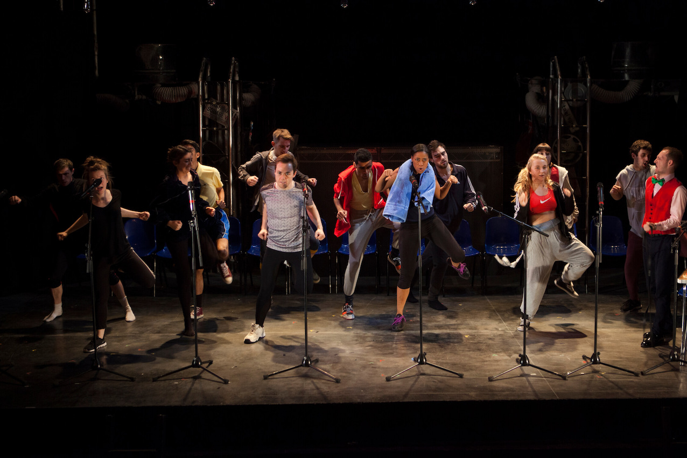
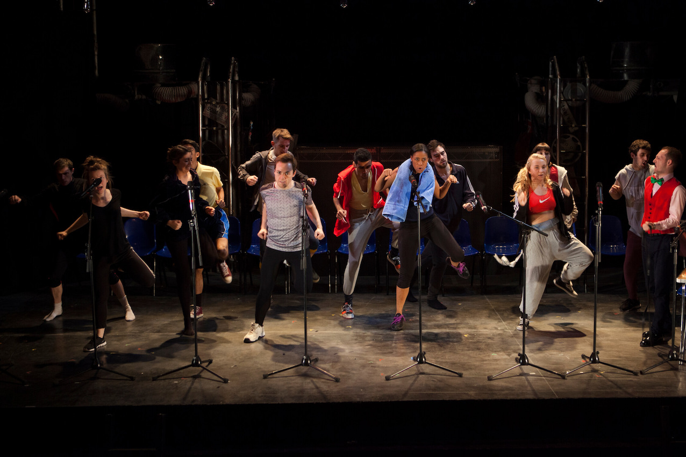

[x]
 



the fall
written by james fritz
first performed at finborough theatre (2016)
southwark playhouse (2018)
"youth theatre at its most mature,
and most dazzling" - the guardian
designer – chris hone
photographer – helen murray
lady windermere's fan
as associate director
directed by kathy burke
vaudeville theatre 2018
photographer - marc brenner
the flying lovers of vitebsk
as associate director
directed by emma rice
shakespeare’s globe, edinburgh international
festival, uk tour – 2017
winner of the carol tambor best of
edinburgh award 2017
photographer – steve tanner
play 26
written by miriam battye
vault festival 2017
“breathtakingly good” - there ought
to be clowns
second person narrative
written by jemma kennedy
ambassadors theatre (2015)
recipient of the bryan forbes bursary
(mentor – michael attenborough cbe)
designer – chris hone
mind the gap
hot tubs and trampolines theatre company
new diorama and national theatre temporary
space (2015)
winner of the '5 minute festival'
"dazzling and intricate" - everything
theatre
about matt
matt is an award winning director and
theatre maker originally from north
yorkshire, now based in london.
he trained at east 15 acting school
and was awarded the bryan forbes bursary
under the mentorship of michael attenborough CBE.
matt is an associate of the national youth
theatre and workshop facilitator for
organisations including the old vic,
almeida and tricycle theatres.
[x]